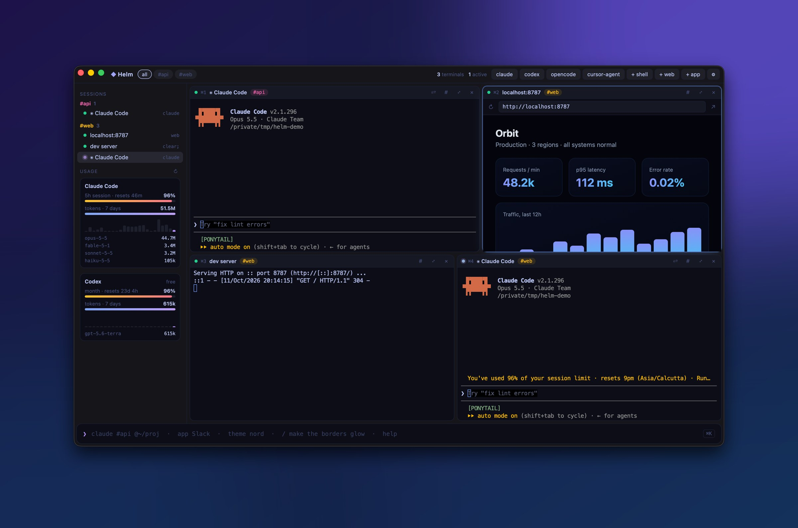
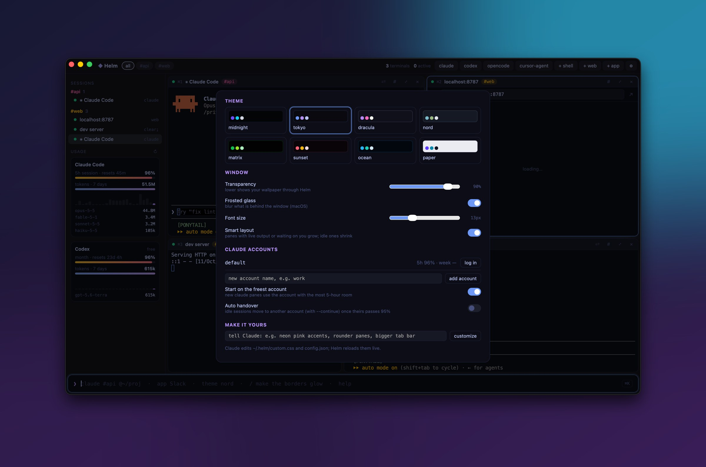
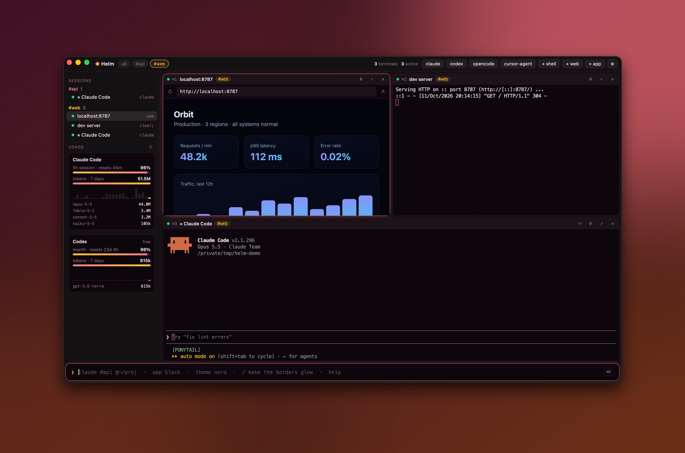

Helm is the command center for Claude Code, Codex, Gemini CLI and every terminal you run. Auto-tiling splits, tags, browser panes, live Claude usage limits and account rotation, in a 3 MB native app.

Everything a normal terminal doesn't know about your AI agents.
claude, codex, gemini, opencode, aider, cursor-agent and more get one-click launchers.
New panes split along the longer side. Drag headers to re-split or swap. layout grid re-tiles.
Real Claude Code 5-hour and weekly %, Codex limits, tokens per model, reset countdowns.
Out of room? ⇧⌘R moves the session to another Claude account with --continue.
send #api run the tests types into every agent in the group at once.
Busy panes and panes waiting on you grow, idle ones shrink. Rules only, zero tokens.
Real webviews beside your terminals. Click a link in a terminal and it opens in a split.
8 themes, see-through window, frosted glass. Or type / make it synthwave and Claude restyles it.


Press ⌘K and type.
3x claude #api @~/code/api three Claude Code agents, tagged, in a folder codex #api OpenAI Codex CLI in the same group npm run dev [server] any command, in a titled pane web localhost:3000 browser pane send #api fix the failing test broadcast to every agent tagged api app Slack launch a desktop app adopt pull in your Terminal / iTerm tabs theme tokyo · opacity 70 restyle live
Great terminals, but none of them knows an agent is waiting on you.
| Helm | tmux / Zellij | Warp | iTerm2 | |
|---|---|---|---|---|
| Split panes & tiling | auto | manual | ✓ | ✓ |
| AI agent detection | ✓ | — | partial | — |
| "Agent needs you" alerts | ✓ | — | — | — |
| Live Claude / Codex limits | ✓ | — | — | — |
| Claude account rotation | ✓ | — | — | — |
| Browser pane | ✓ | — | — | — |
| App size | 3.3 MB | CLI | ~300 MB | ~60 MB |
Install Helm and type 3x claude in the command bar. Each session gets its own auto-tiled pane. Add #tag to group them and @~/path to set the folder.
Helm's sidebar shows your live 5-hour session % and weekly %, with time until reset, the same data /usage shows.
Add a second account with account add work, then press ⇧⌘R. Helm restarts the session on the account with the most room using claude --continue, so the conversation carries over.
Helm: split panes like tmux, plus agent detection, "needs you" alerts, usage limits and prompt broadcasting.
Yes. Anything that runs in a terminal runs in Helm, and the common agent CLIs are detected automatically.
Yes. MIT licensed, no account, no telemetry.